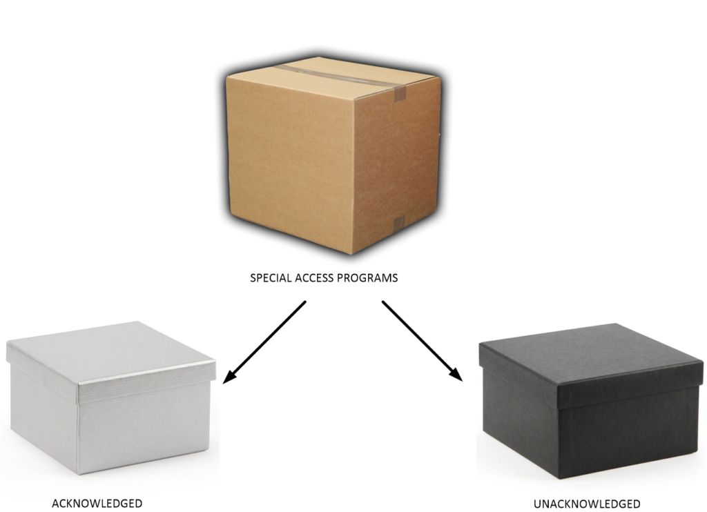

When I was growing up, I used to watch spy shows, adventure shows, and War movies. In each of which the hero would be asked to join a special organization, or obtain special “secret” clearance so that they could be briefed on their tasks and projects. When I got older and was actually offered a role in one such program, I was surprised at how different it was from the Hollywood narrative that I had so expected.
Hollywood is NOT reality.
Here, I would like to take a moment to discuss how Top Secret programs are actually implemented in the United States. Now, of course, all that I can state is all that I know, and do so relative to my very narrow understanding of it. As such the reader can do with it as they will. Most of what I relate can be found elsewhere, by I am sure, better people than myself. When I was exposed to all this, all I was told was what I needed to know to perform my role, and nothing else.
I entered the program blindly on promises, and gave up my role as a Naval Aviator in the process.
As such, I maintained this new role for over thirty years, and was then retired. I learned a lot during my stint, even though it was narrowly defined. Here is my attempt to disseminate the information that I learned, provided that I do not jeopardize any secrets in the process. It is important, I believe. For, to best understand what we humans are, where we are going, and our place in the universe, you will need to know a little about my role and the program that I was in. You will need to know a little bit about MAJestic.
Not the popular narrative, mind you, but the “real deal”.
That’s going to be a hard sell. Because, in the United States, everything is placed in compartments or boxes. Only a very limited group of people have access to any of the boxes, and often they can only have access to but one box only. Within each box, are other levels or compartments. Your role within the organization that you are part of will determine what compartments you can access.
This system of boxes, and internal compartments, are collectively known as “Special Access Programs”, or SAP…
When Pigs Fly
The truth is that the United States government has a very sophisticated system in place regarding secrecy. No longer are secrets simply handled by oaths, and promises.
(SAP programs are) “so sensitive that they are exempt from standard reporting requirements to the Congress”. -A 1997 US Senate report
No longer are they classified only as “confidential” and “top secret”. (For those are just general classification groupings.) Instead, they are classified as “access to information” routes. People only know the absolute minimum of what they need to know, and no more.
To repeat; no one person knows everything about anything. We are all just ants working on our little tiny role in the construction of the anthill.
For instance, imagine that you are in a top secret program. In this program, you would be part of a team designing a system so that pigs can fly. Now, you don’t know why you are doing it. At best, you might be told that it is for “National Security” concerns. Nor do you know who authorized the program. Though, you might be told that “it was authorized from within the highest levels of the government”. You would not know any of the background information’s of who, what, why or where.
Naming the Program
Instead of giving this program a name like “Operation Pig Flight”, you would give it a much different name. You would call it project N5638U11.
Ah, good old program N5638U11. It just rolls of your tongue. Doesn’t it?
Now, since this is a very important program, and it regards issues of the upmost interest to the national security (or at least that is how it has been explained to us), members wouldn’t work together or collaborate either. People collaborate on all kinds of things as needed. But not in absolutely-secret programs. For, after all, it is a REAL secret program. (Ah… there are secrets and then there are SECRETS.)
There’s not a secret place where meetings are held. Nope. Sorry. Nor are there coffee mugs with cool logos and mission patches either. You won’t have a mission patch of a pig flying with fire out of its ass and an inscription in Latin saying something like “flying pigs to the stars”. (ad astra volantem porcos.) It just won’t happen.
Need to Know
You, as a very important member of this team, would only know just what you needed to know and no more.
Now, let us suppose that you would be involved in ignition thermodynamics. In your role, you would be in charge of the ignition system of pig farts. The idea being that once ignited, that the pig would have the necessary propellant force to fly about in the sky. As such, that is all that you would know. It is the only thing that you would know as well. You would have no idea about navigation, landing, sustained flight, or anything else. All you would know was how to ignite farts.
Your role would be carefully specified and narrowly defined.
That way, if some nefarious mad scientist wanted to capture you and extract all of the valuable pig information that you had, they would have a hard time. As such, they could only get (at most) the limited amount that you know and nothing else. That way they cannot extract your information and the information from the entire team. They could only learn about the combustive properties of pig farts. They could only learn about your personal opinions on bacon, and maybe a tale or two about your opinions of notable pig personalities on television (like Arnold the pig, on “Green Acres” or “Miss Piggy“).
Cells of Three People
To keep it secret and so that they don’t go after your other team members, you would only know two others. You would work independently within a “cell” of three people. Further, where possible, you would also be isolated geographically from the others, and only contact them when it was absolutely important to do so. You might be located in Paducah, Il, and your nearest cell member might be in Kalaupapa, HI. So there wouldn’t be a company with a sign out front that says “Flying Pig Industries, Inc.”, nor would there be a webpage, a twitter account, a toll free number, or a LinkedIn profile. Real secret programs operate in parallel with other processes.
A Secret Life
You would be working in your “secret” role while you were working at “ACME Widgets”.
In that case you might be a line supervisor officially, and a “pig fart expert” secretly. Which brings up one of the most important points in this dialog, real secret agents work two roles simultaneously. They must juggle two roles at all times.
The secret role is known to no one. Not even the wife of the pig scientist. The boss at ACME Widgets wouldn’t have any idea that his star employee is also designing flying pigs. Your friends wouldn’t have a clue, and when ever you went out with them for a beer, you wouldn’t even bother to mention it.
Let me repeat this very important point. Real secret agents maintain two roles. One is their “white”, and obvious role. It is the role and work that everyone knows that they do. The other is their “black’ and secret role. No one knows this role except the two other members in their cell. No one else. Not even their family.
They live like Batman. Or, like Superman. They have a obvious life, and a secret life.
Surreptitious Communication
Because of this, and the nature of the work, communication would be surreptitious. In fact, you would use a form of secure communication. It would be encrypted, and possibly only able to broadcast and not receive. It would involve something way different from normal radio, internet or conventional communication techniques. Let other people try to hack into the internet. Let others try to peer into radio waves. You communicate using a totally different method altogether. Maybe you use smells, fruit or temperature gradients.
Your method of communications would not look anything like communication. It would be unhackable. Because no one would be aware that anyone could even be able to communicate using these other methods.
Again, boys and girls, real secrets are SECRET.
The Aggregator
There would be one person in the project that would know everything about it. This person would be the aggregator. He would compile the information, distill it into a viable program. He would direct tasks, set up milestones and organize the entire operation. Ultimately, he would create an executive summary (summarizes and makes recommendations) to HIS supervisor. The supervisor would monitor all such programs, but would not know any of the details. Only the aggregator would know all of the details of the project. Because the aggregator would be in possession of such important information, they would be kept isolated and apart from everyone else. Their role would be the most important, and because of it, they would be the most isolated.
The supervisor would at best only know the rough outline of any of the programs under his purview.
None of the agents would ever know who the supervisor was, or who the aggregator was. They would only know the three people within their team cell. They would not know the roles of the people either. They would only know that they worked on pig farts at the same time that they clock into work at “ACME Widgets”. They would report their findings through the secure communication method and work independently.
They would work in secret and live their life. They would have a black and a white life. The program would exist for a set defined period of time. It would have goals, objectives, and a sunset. Once the program is over, it would close down. But, now you have a problem. What is going to stop the agent from going about and talking about the program?
Program Shut Down
It’s easy enough to do while the agent is still working the project. He is still connected to the organization. He is constantly monitored and observed. Of course the agent will keep quiet.
How do you keep the agent quiet, once the program is shut down?
What you do is put him in a monitoring program.
That is right. You would [1] monitor him, and all his communication, where he lives and who he associates with. You would also [2] do something that would make him shunned. You don’t want him to have close friends either.
You want to keep him isolated and monitored, for after all you don’t want an evil organization to get their hands on thirty-years of information on pig farts.
Well, the monitoring of Americans is pretty much illegal. (I know, I know, with Facebook, DHS, the FCC, and the NSA. But these systems did become capable until after 2000.)
There’s only two ways to monitor the agent. You either [1] slam him in jail, and keep him there for a nice long time, or [2] you put him in a strong monitoring registry. Now, it’s going to be pretty difficult to put a person in prison unless you have a dead body lying around. You need some kind of mechanism that will make it easy to accuse an agent, arrest them, and put them in prison. Then, you will need to keep them shunned from society, and then monitor them for a long time after release.
This is not the television show “The Prisoner” where the retired agent is sent to an isolated island. You cannot do that. That is far too visible a solution, and while the retired agent is quite isolated from the general society, he is part of a community of other retired agents.
No. What you need is a system that makes the agent completely shunned by everyone. You want to make it so that every time the agent opens his mouth, he is shut down and silenced. When he says something… immediately no one even hears what he says. You must make a cartoon out of him. You must paint him as a pariah.
There is only one monitoring registry in the United States; it is the sex offender registry. So what you would do, when it is time to retire your agent after thirty years of service, you would arrest him for sex crimes and place him in a lifetime monitoring program.
The moment the retired agent opens his mouth, you just scream “SEX OFFENDER” at the top of your lungs and point at him. No one will ever pay any attention to what he has to say.
And that dear boys and girls is how a REAL SECRET program operates.
Top Secrets and REAL Secrets
Now, the reader probably doesn’t have a clue as to what I am talking about. Because we know that there are secrets that are being released in the United States daily.
Look at all the leaks in the White House. Look at WikiLeaks. Heck, we know that Hillary Clinton even made her own computer server-farm and vacuumed up every secret she could get her hands on, and successfully sold them to foreign agents for huge wads of money. The money then accumulated into a huge “slush fund” that her family drew upon to live a kingly life. Ah, she was investigated, and the investigator Comey couldn’t find a motive which made her innocent. Duh! As if pure raw greed isn’t a motive! And, the need for a motive was more important than the crime itself! My Gawd!
But I digress.
Now, let’s not get confused. This particular article isn’t about how secrets are kept in the United States. It is about how REAL secrets are kept within MAJestic. As such, you all had best pay attention as this is not how everyone thinks things work. Those “leaks” out the White House are no more than (unofficial) releases of confidential information. Those documents found by Wikileaks are “secret”, and many might even be part of a SAP. However, they are not SECRET. Real secrets are something else altogether.
When there are REAL secrets that must be kept secret, you don’t mess around. You put real strong systems in place.
Which is quite different from what everything thinks. In fact, I am quite surprised about it. Even though many people are aware of Special Access Programs, and they know that a big nation like the United States has secrets, everyone still treats things as if all you need is to take an oath and put your hand on the Bible. Well, maybe for the State Department it is that way. Maybe for certain military operations it is that way. But not for REAL secret programs, and most certainly not for MAJestic operations.
There are Secrets and there are SECRETS
There are many levels and types of access programs, and this particular post deals with the subject in some level of detail. Thus to understand my story, one must understand the system.
The reader, like all typical Americans, knows about “secret government programs”. Indeed, the three-tier standard government security clearance levels are well known: confidential, secret and top secret. There are of course, other systems, as well. While at NAS China Lake we used that basic system, as does all contractors, by a color coded system. You can tell by the color of the badges. For instance, confidential access is shown as a green badge color.
However just having a clearance at anyone of these levels does not automatically give access to any information at that level. You can have a “Top Secret” badge and still not have access anywhere. There must be a demonstrable “need to know” in order to be briefed or read in on a given project, program, facility or intelligence product. There are thousands of “Top Secret” programs. Does a person in one “top secret” program have access to another “Top Secret” program? No, of course not. Each program is identified by a specific identifier and only those assigned to that identifier can access it.
This system seems to work pretty well.
Outsiders are Always Compromised
The problem with this system is that there are people and organizations outside the program that might know of the existence of the program. (Therefore, how can they be actually and ultimately “secret”?) For instance, the person who makes the badges and puts them together, knows that a particular person has “Top Secret” clearance. This includes the clerks in Washington, D.C. who process the various piles of paperwork that the particular person signs. So, yeah. It can get difficult to keep secrets. Everyone can, in one way or the other, touch on the works of a “secret” operation.
These people generally also include the elected Congress and Senators who rotate in and out of government circles and are highly subject to compromise in various forms. In fact, I urge the reader NEVER to trust an elected official. They have already been compromised.
Which is why the MAJestic organization DOES NOT includes elected officials in the organization. (There are always rare…rare exceptions, of course.) That knowledge by those people is dangerous in that it comprises the program at its most fundamental level. Therefore this system is merely the visible side of the security system.
Example
Here is an example of a Federal Judge…
First some background. In a period of time ranging somewhere between 1975 and 1979, Peter Gersten, a lawyer representing CAUS (the Citizens Against UFO Secrecy) sued the NSA after its refusal to release requested files via FOIA (the Freedom Of Information Act). In 1980, the chief of the Policy Office for the agency, Eugene Yeates, sent a document larger than 20 pages to Gerhart Gessell, the Federal Judge who was overseeing this particular case, explaining why the files in question must remain classified. This is known as the Yeates Affidavit. But, this document was classified as well. The judge was not authorized to read the actual content of the files, but the letter itself convinced him alone.
Here is what he said.
“The public interest in disclosure is far outweighed by the sensitive nature of the materials and the obvious effect on national security their release may well entail.” -Gerhart Gessell , Federal Judge, when explaining why the government would not release any information regarding UFO’s.
Systems that Control Systems
There has to be a system that controls “outside” knowledge of the secret programs from everyone whom might discover the presence of such programs. Therefore, there is a massive secret “black” (non-visible) system as well. The existence of which is known while the details (naturally) is deeply hidden. This structure has been described (by some) as a “shadow military” existing in parallel with open or overtly classified programs. It is designed for programs considered to be too sensitive for normal classification measures.
These “black” programs are called Special Access Programs (SAPs).
SAP – Special Access Programs
These programs are protected by a security system of great complexity.
In fact, many of the SAPs are located outside of the United States government. Instead, they are located within technical industries directed and funded through special contracts. In the United States, this occurs under arrangements known as “carve-outs”. Here, such programs and funds become removed from the usual security and contract-oversight organizations. After all, how can you compromise a given secret program, if you don’t even know where the heck it is?
The way to keep them secret is to move them outside government control and reporting structures. You “carve them out” of the huge government organization.
We know, for example, that in 1997 there were at least 150 SAPs. Thus, there were at least 150 programs that NO ONE in the government knew the details of. All they knew was their alphanumerical designation and the necessity of funding them.
Levels of SAP
“The way things are supposed to work is that we’re supposed to know virtually everything about what [government officials] do: that’s why they’re called public servants. They’re supposed to know virtually nothing about what we do: that’s why we’re called private individuals. This dynamic - the hallmark of a healthy and free society - has been radically reversed. Now, they know everything about what we do, and are constantly building systems to know more. Meanwhile, we know less and less about what they do, as they build walls of secrecy behind which they function. That’s the imbalance that needs to come to an end. No democracy can be healthy and functional if the most consequential acts of those who wield political power are completely unknown to those to whom they are supposed to be accountable.” -Glenn Greenwald
Just being in a special access program is not enough. There are also levels of SAP, the first being a division into acknowledged and unacknowledged SAPs. All SAP’s can be classified into belonging into one type or the other. These types are “acknowledged” and “unacknowledged”.

What the point here is whether it will EVER be admitted that this program exists. An “acknowledged” program, can and might eventually be recognized as a program of importance to various people. However, an “unacknowledged” program never will be recognized as existing at all. It never; ever will be. It will forever be kept secret and the members will keep the knowledge of its existence to their graves.
As the reader can tell, there are all kinds of designations for the government to collect information. But that is not really what I am referring to. Instead, this is what I specifically refer to dig down deeper and involves much more serious issues.
- A “Black Program” is slang for a SAP. (SAP).
- A “Deep Black Program” is slang for an unacknowledged SAP. (U-SAP).
- Any program that is more secret than a U-SAP is waived from all reporting and has no slang designation. (W(U)-SAP). It is a waived unacknowledged special access program.
An unacknowledged SAP is so sensitive that its very existence is a “core secret.” Indeed, some unacknowledged SAPs are so sensitive to the extent that they are “waived” (a technical term) from the normal management and oversight protocols. My program; the one that I was in was a “waived” unacknowledged Special Access Program. I tend to refer to this as a W(U)-SAP, but this is my own nomenclature.
It’s pretty serious stuff.
Appropriations Committees
Indeed, even members of Congress on appropriations committees (the Senate and House committees that allocate budgets) and intelligence committees are not allowed to know anything about these programs. In the case of a waived SAP, only eight (8) members of Congress (the chairs and ranking minority members of the four defense committees) are even notified that a given program has been waived (without being told anything about the nature of the program). Such a program is certainly a deep black program.
The number of people with access to multiple SAPs is deliberately very limited. Most members of a SAP are involved in ONE and ONLY ONE Special Access Program (SAP). Such as myself, I was only involved in one W(U)-SAP.
This assures that no one knows what is going on in another program.
Black programs are often covered by white (normal classification system) or unclassified programs. For instance, the U2 spy-plane was covered by a weather-research aircraft program. The Roswell crash was also covered by a Weather balloon. (Such was the mindset in the 1960’s.) Such covering allows technology to be relatively openly developed until such time as it is ready for application to a black program. The overt cover program is then usually cancelled, having accomplished its purpose.
The X-30 NASP
Indeed, this happened to the X-30 National Aerospace-plane project (NASP) in 1994. To the media and the public, it appeared to be an unrealistically ambitious program that was eventually cancelled, but was in reality a cover project. The media had a “field day” making fun of Ronald Reagan’s (R) “Orient Express” as he politically named the program. They praised Bill Clinton (D) for killing the program. When the real truth was hidden from the American people; the program was a stellar success.
That narrative and dialog was promoted by the military DARPA and their spokesmen, with the objective being to have the United States media parrot what they wanted everyone to think. The truth was that the program was a success, and showed far more promise than they expected. What we know now, decades later, is that this project went “deep black”. Indeed, this is a project for what is almost certainly a black-world hypersonic aircraft.
Very Secret SAP – Unacknowledged
So far, we have discussed some black programs. These are normal, “everyday”, and typical SAP’s; diplomatic relationships, secret funding methods, gun running, and other “everyday” enterprises of the State Department. In addition there are the more secretive aspects of technology; a cutting edge spy plane, the recovery of an extraterrestrial spaceship, and a LEO ferry vehicle. These are things we can understand. While there are hoards of deniers, and skeptics, these things are all understandable. They are vehicles, machines, and technologies that are plausible. Even if you refuse to accept the idea of them.
Now, let’s put that all aside for a minute. Let’s get to REAL secrets.
Here is a world that is very far beyond what “normal” people consider reality. It is a world where there are extraterrestrials, science, technology, and abilities far in advance of what is considered to be normal. Oh, there a science fiction movies about this kind of reality. Time travel, dimensional doors, and mind control are all popular themes. But they could never actually exist… right?
It’s all just science fiction. Right?
Right?
Passive Measures
It is important that secrets be kept secret.
Someone read in on an unacknowledged SAP would be required to deny even its existence, i.e. even a “no comment” would be a serious breach of security. It can also happen that someone, such as a general or admiral (ostensibly responsible for certain types of programs or areas of technology) would be kept ignorant of the program. Indeed, they would not even be briefed on the existence of a program. Even if it was within his jurisdiction.
The towering wall of denial in the deep black world can thus be maintained. It can be accomplished by both deception and a deliberately crafted lack of cognizance. That way, the head officials can truthfully deny the existence of any deep black project.
Active Measures
In addition to passive security, active measures can also be deemed necessary. You know, keeping all the key people ignorant only goes so far. What happens when a farmer stubs his toe on a buried extraterrestrial fuselage? What happens when an agent has a hernia operation and starts reciting code to the startled nursing staff? What happens when an agent starts to phase in and out of reality while being interviewed on television? Yikes!
These include [1] disinformation, and of course [2] probe implantation.
Discrediting Binder
One disinformation ploy is to divulge both real and fabricated information of equal apparent credibility mixed together to someone or some group. The fabricated information can then be used to discredit claims, individuals or organizations.
A discrediting binder is attached with all MAJestic members to enable and instigate a formalized, exacting plan to complete discredit anything that they say or do. Part of this discrediting protocol is retirement of W(U)-SAP agents though the Sex Offender registry. (No one ever believes a sex offender. They are shunned, and automatically discredited even before they even open their mouth to speak.)
This is a highly effective way to keep a major secret. Make it so that no one ever listens to an ex-agent. Make it so that they are shunned, isolated, and ridiculed.
Probe Implantation
When you join a deep-black program you are implanted. Everyone is implanted. There are no exceptions.
The implants control memory access among other things. These probes are put within your skull. They come in different “packages” or “kits”. The most basic is a simple system that controls your ability to recall certain memories.
Everyone who is part of MAJestic is implanted. EVERYONE.
E-V-E-R-Y-O-N-E.
Of course there are other kits with other purposes and abilities. These other kits provide “keys” that enable the implanted person to access certain “dimensional doors”. There are also kits that enable a given agent to be entangled with other devices, artifices, and creatures for various purposes. There are also kits that provide one with the ability to switch world-lines.
Like I stated previously, deep back SAPs are the stuff of science fiction.
Now, boys and girls, this is also the litmus test for membership in MAJestic. If you are going to disclose anything of importance regarding actual extraterrestrials, then you will have these memory probes. They can be viewed on an MRI, and with an X-ray. If you don’t have them, you were never in the organization. It’s very cut and dry and very clear. I have them. In fact, I have three complete sets, all with very specialized purposes.
So when someone makes claims of “space marines”, and top secret MAJestic projects, test them at a hospital. Otherwise forgetaboutit.
Carve Outs
You never keep real secrets within the government. All governments are compromised. So you put them elsewhere. You keep them out of the government, and put them within private companies.
“Careful consideration of the record as it is available to us leads us to conclude that further extensive study of UFOs probably cannot be justified in the expectation that science will be advanced thereby.” -1968 University of Colorado report to the Air Force.
Deeply buried programs in contractor facilities are called “carve outs”.
As such, and in the case for most of MAJestic operations, you will need to have a technical background to even be able to walk into the door there. For what it is worth, you would need a university degree and membership in some military organization before you would even be considered to go near any MAJestic program. So when I see these non-technical people spouting off nonsense about MAJestic on the internet, I just end up shaking my head. The two fundamental requirements to work in MAJestic are that you must be part of the military (at some point in time) and have a technical degree.
What is truly ironic is that the Hollywood actors that pretend to be members of a W(U)-SAP are paid millions of dollars, when the actual and real members are generally not paid at all. Or if they are, the agents are paid in small amounts. Matt Damon played the role of a person in a Hollywood version of a U-SAP and made millions of dollars in doing so. However, I was the “real deal” and the most I made while in training was $9/hour. WTF?
Ah, just keeping it real you know.
The reader should realize that the MAJestic umbrella consists of W(U)-SAP “carve outs” that operate as IRAD entities. These entities are outside the government, but operate under their protection elements. They operate in the Military-Industrial theater, and are managed by former military with technical backgrounds.
Selection for inclusion in MAJestic is under the purview of a non-human species. MAJ membership must first obtain permission prior to implantation.
“I find it hard to imagine something as explosive as recovered alien technology remaining under wraps for decades. So while I have no reason to believe there is any recovered alien technology, I will say this: If it were me, and I were trying to bury it deep, I’d take it outside government oversight entirely and place it in a compartment as a new entity within an existing defense company and manage it as what we call an “IRAD” or “Independent Research and Development Activity.” -Christopher Mellon
Duration
Political leaders come and go, pandering to the masses for votes. As such, all of us have varying degrees of respect and trust for them. Deep black programs are quite independent of any given administration. What this means is it would certainly be unrealistic to assume that a given president has been briefed on every SAP.
A president does not automatically have a need to know.
“Read the books, read the lore, start to understand what has really been going on, because there is no doubt that we are being visited. . . . The universe that we live in is much more wondrous, exciting, complex and far reaching than we were ever able to know up to this point in time. . . . [Mankind has long wondered if we’re] alone in the universe. [But] only in our period do we really have evidence. No, we’re not alone.” – Dr. Edgar Mitchell, ScD., NASA astronaut (6th man to walk on the moon)
I do not know of any fundamentally limiting factors in the potential longevity of a program. The extreme compartmentalization and limited oversight would tend to keep a program in existence, perhaps indefinitely. Most programs that I know of seem to indicate a total lack of [1] program management audits, [2] performance measurables tied to longevity, and [3] sunset procedures.
Most importantly, Freedom of Information Act requests cannot penetrate unacknowledged special access programs. So, to the reader, all I can say is “good luck” in trying to get an FOA to penetrate MAJestic secrecy.
Would the President be Briefed on a W(U)-SAP?
If the reader expects that “someday” a United States President will tell the truth of MAJestic and the knowledge of extraterrestrial life, they are seriously in error. It will never happen. The presence of the organization, it’s missions, it’s purpose and it’s activities will NEVER be disclosed. EVER.
NEVER. N-E-V-E-R.
Elected officials, with some notable exceptions, are never privy to this information. They are, and properly so, considered to be compromised. The best bet or likelihood of a disclosure would be from a Presidential candidate who has strong military and aerospace connections. Typically, that would imply a Republican elected official. That is the truth and the facts, no matter how disgusting the concept might be to the reader.
Hillary Clinton (D)
On January 6, 2016, Presidential candidate Hillary Clinton (D) announced she would “get to the bottom” of the mystery behind UFO’s. CNN reported this as a humorous joke, but others took it seriously.
Well, I personally wish her the best, but the truth is that she is exactly the kind of person who is banned from knowing anything about MAJestic. The reason is quite simple, her political philosophy is in direct opposition to the interests of the industrial leadership that is part of MAJestic. Further, she is not secure. She has a wide ranging web of political and financial ties in which she is indebted to. She is thus easily compromised. Finally, and perhaps most importantly, her sentience does not fit the sentience requirements for MAJestic. I say this knowing just how apparently well-connected she is. She does not have, nor will ever have, the qualifications to be privy to many of the secrets of MAJestic.
Those in MAJestic consider her (as well as most Republican political players as well) as a serious threat to the security of the organization.
In MAJestic we all view our tasks at a level far above that of the petty squabbles between nations. Sure, we are often personally affected by the decisions and laws of the nations, but our role and purpose is of a much higher order. A Presidential candidate such as Hillary Clinton would turn the great and grand effort into something far less; a temporary media circus, and eventually disassembly into components that could be sold off to the highest bidder for short-term political gain. No. People and individuals such as herself are forever banned from the fountain of knowledge that is MAJestic.
She can promise the world to her loyal followers, but her ability to deliver substantive results is minuscule.
“This thing has gotten so highly-classified…it is just impossible to get anything on it. I have no idea who controls the flow of need-to-know because, frankly, I was told in such an emphatic way that it was none of my business that I’ve never tried to make it to be my business since. I have been interested in this subject for a long time and I do know that whatever the Air Force has on the subject is going to remain highly classified.” – Senator Barry Goldwater , Chairman of the Senate intelligence committee, discussing his attempts to find out exactly what the US government knows about UFO’s.
Jimmy Carter (D)
In 1976 presidential candidate Jimmie Carter promised the American people that he would open any government UFO files that might exist. The reader might also recall that while governor of Georgia, Carter had a UFO sighting and actually filed a report. Then, after winning election to President, Carter met with CIA Director George H. W. Bush seeking a briefing on the topic. There was no question that the new President wanted answers and the full extent of the United States involvement with extraterrestrials and/or “UFO’s.
Could you blame him?
I am sure that the wanted to find out what those things were that were flying about. Perhaps he might even has suspected that there might have been a recovery of one or two craft. Of course, that is so laughable. MAJestic has been working with the caretakers of this planet for many decades.
However, as the reader has probably guessed, Mr. Bush turned him down, claiming that neither [1] as President nor as [2] Commander-in-Chief did he have a “need to know.” Obviously this was a severe “let down” for the new President.
This seems rather harsh and blunt, because the common misconception is that the United States President is the highest authority in the land. However, that misconception is flawed and very, very wrong.
The President is the highest authority of only one of the three branches of government (the executive branch), and the highest authority of the military. Unless the program is tied to the executive branch, or the military, the President has no authority over it.
In extraterrestrial matters, our extraterrestrial partners select who has access to their programs. Not us. They specifically exclude certain individuals for specific reasons.
Elected officials who have not met the sentience requirements are routinely disbarred from participation in the programs.
Anyways, back to Jimmy Carter…
A few months passed.
Once, firmly in office, Carter turned to NASA for information. It was his hope that the Space Agency would be able to help him in ways that the others were unable or unwilling to. To this end he directed presidential science advisor Frank Press to ask NASA administrator Robert Frosch to “form a small panel of inquiry” to investigate the UFO situation. (Ugh! Yup, another one of those “Blue Ribbon Panels” to unearth secrets and investigate with solutions. Yeah, I have a personal distain for these political panels full of borderline losers who managed to climb to undeserved positions of power and authority.)
However, to the surprise of many in the UFO field, nothing at all came of this.
The story of “the great thud” was recounted by Richard C. Henry — then a young astrophysicist (now a prominent Johns Hopkins professor) working as a deputy to the director of what was the Astrophysics Division at NASA headquarters . It was on his desk this “hot potato” request landed.
When asked about this request, and what actions the “Blue Ribbon Panel” took to resolve the questions asked by the President, Richard C. Henry couldn’t say. For five months, NASA went through some amusing twists and turns, recounted by Henry, before politely declining.
The exploratory panel found out nothing. They investigated nothing. They wrote no summary’s, and provided no answers to the President at that time.
The information regarding UFO’s, extraterrestrial species, treaties with them, their technology, and the social implications of communication with them are not, and never was, part of the administrative functions of the President of the United States.
They would only become an issue with the President when it became a matter of National Security involving military personnel.
This was the case during the formation of MAJestic with Truman, and when Ronald Reagan became involved in the program. In both cases there was a concern about military intervention using military forces. Other than that, relations with the core extraterrestrial species have been cordial and did not require presidential participation.
“I recall instances when White House officials sought briefings on highly compartmented DOD programs and were flatly refused. Access to such programs is on a need to know basis. In general, nobody outside DOD, including the Secretary of State, is deemed to have a need to know. Officials like John Podesta and Secretary Clinton can easily serve for years in senior positions and be avid consumers of classified intelligence analysis but never obtain access to DOD’s compartmented programs, which mostly relate to new weapons systems. Information about such programs rarely leaks because it doesn’t circulate, unlike the constant stream of leaked information regarding classified intelligence activities.” -Christopher Mellon
The Extraterrestrial issues
Our relationship with known extraterrestrials is via their conveyance. They control the technology egress. They control our lives, and they control us. They have reasons and purposes for operating here on the earth. Their sole concern is to help the human sentience establish itself into a quantum configuration that is galactically approved.
With that being stated, they control [1] how we interact with them and [2] what information is dished out to the human population in general. [3] They control MAJestic, and they control [4] the membership of MAJestic. It is important for them and the success of the program to do so.
Thus, from their point of view, it makes no difference what the person’s role or position is in the earth human society. They do not care. It does not matter if they are attractive, famous, rich, intelligent, powerful, or popularly elected. They have a completely different set of criteria by which to make a determination of who will be involve in MAJestic and what their role would be.
Here is the truth.
If a newly elected President wants to know all about extraterrestrials and their role in the world of UFO’s and society, they will first have to meet the requirements of acceptability by the governing extraterrestrial species. Their requirements are specific and unwavering. No exceptions are permitted at all. These participation requirements are;
- Must have a “Service to Others” sentience. Every single person in the MAJestic organization is of the same sentience. There is no blending of sentience’s for diversification purposes. Humans in general are confilicted with three types of sentiences. The organization requires homogeneous sentience’s. This is an extraterrestrial requirement.
- Must have a fairly “clean” or “pure” quantum cloud envelope. This is also an extraterrestrial requirement. More about this later on.
- Must be willing to give up a part of their soul towards the good of the human species. To join you must give up a part of what you are and who you are. It is a sacrifice, but I like to think of it more like a “down payment”. This is a fundamental extraterrestrial requirement.
- Must place the well being of the human race before any government or nation. Of course, this is an extraterrestrial requirement.
- Must not be part of any entrenched political machine. This is because they might “owe” some favors that might compromise the good of the program. It is an extraterrestrial requirement.
- Must not be famous or well-known. (Group thoughts are terribly polluting to the quantum cloud.) It is a requirement, though I am not sure if it is wholly an extraterrestrial requirement.
Examples
The reader might doubt the policies of MAJestic. They might question the reasoning behind why a given political personage would be forever barred from joining the organization. They might argue that the President absolutely must be the most secure person to hold a secret. This would simply be because of his position.
However, the arguments are completely and wholly inaccurate.
Hillary Clinton and Membership in MAJestic
Consider the 2016 Presidential Candidate; Hillary Clinton. Here is a famous “Service to self” candidate. Well known, and much beloved by her followers. Her political strengths are legendary. Her connections and experience are outstanding. Yet she would be denied membership in MAJestic, and forever barred from any MAJestic related information. Why?
Well, aside from her sentience type (all MAJestic members are of one set sentience), the mere fact that she is a politician is reason for concern. Politician’s do not keep secrets. They are unable to. The mainstream population might think and believe that everyone in the Whitehouse holds and keeps secrets, but that is not the truth; nor the reality.
As of early 2016, at least a dozen email accounts handled the “top secret” intelligence that was found on Hillary Clinton’s server and recently deemed too damaging for national security to release. Officials said the accounts include not only Clinton’s but those of top aides – including Cheryl Mills, Huma Abedin, Jake Sullivan and Philippe Reines – as well as State Department Under Secretary for Management Patrick Kennedy and others. Secondly sources (not authorized to speak on the record) said the number of accounts involved could be as high as 30 and reflects how the intelligence was broadly shared, replied to, and copied to individuals using the unsecured server. As of 2017, we were collectively shocked to discover that the number of “mishandled” secret documents was much, much higher than that. This sort of rampant mishandling of classified material cannot be minimized. This is actually a rather common practice, and well understood by the MAJestic leadership.
She was “cleared” by the FBI Director Comey due to political concerns. However, the aligned extraterrestrial leadership would not be so understandings were they to judge her actions.
Political personages CANNOT keep secrets unless they believe in a higher order or purpose. This is impossible for “service to self” sentience. Most, if not ALL, service to self sentience DO NOT BELIEVE in a higher purpose. This is true no matter how much they pretend to believe in a God, or in Nature, or in an improved social order. They only believe in one thing; THEMSELVES.
It is precisely because of this kind of behavior that certain classes of human sentience are forever disbarred from information access with MAJestic.
MAJestic Agents
When you first join MAJestic you are typically young and in your 20’s. You make commitments, and receive training. You are then set loose to live your own life. That might be anything from being a CPA to working as an engineer in an appliance company.
You are just let loose to build up a life.
You get married. You have children. You go from job to job as the markets expand, contracts, and society carves it’s tentacles into your life. You get promoted, and your career expands. You get fired, and you suffer losses. You have divorces, and accidents. You have children, and train them to be good citizens. You have parents that get old and pass on. Life continues for everyone. It doesn’t stop. It doesn’t stop if you are a member of a secret organization either.
Life happens to everyone.
While all this is going on, the agent is expected to work in his role. Whatever that role might be. Situations will arise to make it easier for the agent to their role. Even though agents are left to fend for themselves, there is a sort of support arm that makes it possible for the agent to survive and maintain their dual roles. Though the support arm could certainly be improved somewhat.
For instance, the engineer working on the “Flying Pig Program” might lose his job at “ACME Widgets”, and end up being a manager at a Burger King restaurant. He might work long shifts. He might be involved in a corporate expansion program, and might be dealing with twin daughters. When he is not doing his “day” job, he is taking care of his family responsibilities at the same time that he is working as an agent. He will receive communications, process tasks, and report to his cell-mate. No one will know the difference.
He will be the master of hamburgers in the day, and the creator of flying pigs in secret.
The MAJestic W(U)-SAP
Let’s talk about MAJestic.
Overall, it is a very close-knit and secretive organization.
Members at my level of involvement were all members of three-man cells, in addition to all of us being implanted. That was just how secretive the organization was / is. No one knows the entire extent of this organization. I don’t. Nobody knows.
September 24, 1947 MEMORANDUM FOR THE SECRETARY OF DEFENSE Dear Secretary Forrestal, As per our recent conversation on this matter, you are hereby authorized to proceed with all due speed and caution upon your undertaking. Hereafter this matter shall be referred to only as Operation MAJestic Twelve. It continues to by my feeling that any future considerations relative to the ultimate disposition of this matter should rest solely with the Office of the President, following appropriate discussions with yourself, Dr. Bush and the Director of Central Intelligence. -Harry Truman
Those whom wish more details can find other books on the subject elsewhere. In all cases, public knowledge is greatly retarded. No one person knows the full extent of the organization. No one person knows the full extent of the program No one does. This includes the highest levels of the organization itself.
Anyone who says that they know all about the organization is lying.

Interesting photo this. It looks like it is from the “Golden Age of Travel”. At that time, the world was still a big place, and many regions maintained their own culture, customs, dress, and history. The more advanced cultures and nations provided outlets for exploration and adventure using the modern contrivances of that time. During such adventures culture encounters were varied and meaningful.
The MJ-12 “MAJestic” Committee is tasked with the study and management of all extraterrestrial events and phenomenon. This is an organization that does actually exist. (To repeat; this is an actual organization that functions within the framework of the United States government.) It is not a figment of some kind of “tin foil hat” conspiracy. It is a real and actual organization. It does exist.
While I know very little about its initial formation and earlier incarnations, I do know about the manifestation of what it had evolved into while I was involved in it. This was from 1981 through to 2006. (What it is today, and how it works today, is unknown by myself at this time. I exited from the active participation in the organization in 2006, and exited from my “retirement” in 2011.)
Conspiracies do exist. In the 1920 and 30s, Los Angeles, Philadelphia, Boston, Seattle and countless other major American cities had sprawling electric streetcar rail systems until General Motors, Standard Oil, Phillips Petroleum and Firestone bought up a controlling interest in National City Lines. Once the monopolizing companies owned the railways, they shut them down, forcing Americans to buy cars or ride GM-manufactured buses, fuelled with Standard Oil and Phillips Petroleum, and fitted with Firestone tires. This deliberate campaign to kill the electric-powered streetcars is known as the General Motors conspiracy. The full story didn’t become public knowledge until a Harvard Law began investigating the conspiracy in the seventies and took it all the way to the Senate. During the hearings, which brought forward the proposal to restructure the automobile, truck, bus, and rail industries, General Motors was described as ‘a sovereign economic state’ and affirmed that the company played a major role in the displacement of rail and bus transportation by buses and trucks. By the time the Justice Department caught wind of what was going on, National City Lines had already acquired and taken control of 46 transit network lines. In 1946, nine corporations were indicted in federal district court, accused of “conspiring to acquire control of a number of transit companies, forming a transportation monopoly” and “conspiring to monopolize sales of buses and supplies to companies owned by National City Lines”. Five corporations, including GM and the usual suspects, were convicted of conspiring to monopolize the sale of buses and related products to local transit companies controlled by NCL; but were acquitted of conspiring to monopolize the ownership of these companies. General Motors was fined $5,000. GM treasurer H.C. Grossman was fined $1. The General Motors conspiracy is also frequently dismissed however, claiming the corporations’ did nothing that wasn’t already happening to a bankrupt system which was already being dismantled across the country. An in-depth Vox article on the subject (one of the vocal mouthpieces of the oligarchy) points out that
From publicly disclosed information (that is contentious), apparently MJ-12 was first authorized in 1947 by President Truman.
This program was kept secret and entirely hidden from the public for many decades. It wasn’t until a surreptitious public disclosure (Released by request upon the death of one of the original MJ-12 members.) was made that others became aware of it. (Hotly and fiercely disparaged by NSA infiltrators and vocal statists.)
Disinformation Campaign
During my time in the program, no one knew about our organization or our involvement in it. Thus, when it’s existence was disclosed, it sent shock waves through the UFO and conspiracy-minded community. As a result, it forced an immediate debunking and disinformation campaign.
This continues to this day, with many (of the more popular and well known) conspiracy and UFO web sites and organizations touting the official government party line.
“…ongoing research indicates that many, possibly all, the so-called MJ-12 UFO documents were officially fabricated as instruments of U.S. covert psychological warfare . . .” -International Space Sciences Organization (ISSO)
DO NOT BELIEVE THEM.
What can be Told
The reader should not be deceived by the disinformation campaign. This program is real and quite active. Though what form and designation it currently has contemporaneously is unknown to me at this time. Some important considerations must be taken into account;
About nomenclature;
- MAJestic falls under the MAJI (the Majority Agency for Joint Intelligence) umbrella.
- I prefer to refer to this organization as “MAJestic” simply because that was the terminology used at the time of my entry into the program. I do not know what it is actually called today.
- Only the top members of the organization referred to it using the MAJestic nomenclature. Everyone else in the organization referred ONLY to their specific part within the organization. Typically using slang or their alphanumerical designator when necessary. Personally, we referred to it as “the program”.
- This program is often confusingly referred to as “MAJestic”, “MJ-12”, “MAJI”, “MAJIC” or as “MAJestic-12”. The various names used all refer to specific areas of procedural interest, but are often used incorrectly though inadvertent ignorance.
- This program has hundreds of tiny sub-programs that all have dedicated membership.
- The umbrella organization operates “programs” and “projects” that are unaware of the overall parental control.
The above should be quite understandable, no great secrets are being disclosed. I think that the reader can come up with this information on their own if they looked hard enough. It’s really all over the internet, no matter what efforts were put forth by disinformation experts. Now, to further elaborate on some of the secrecy aspects…
- In most specialized sub-programs, all direct and active members operate in 3 man cells. No one person knows the full extent of the program.
- Most members are not told anything other than what they immediately need to know to accomplish their tasks.
- All members in this organization are part of the W(U)-SAP security classification.
- It is not a political organization. Political members are typically considered to be security risks, with only the ones with the strongest religious or national values even considered to participate.
- Officially, the United States government disavows all knowledge and involvement in this organization. But it does exist. This is why a W(U)-SAP has the “U”. All involvement is denied.
None of this should be a surprise. Again, all of this can be found on the internet in one form or the other. All real genuine secret programs operate this way. To continue on some of the more uncommon or UNKNOWN aspects of MAJestic secrecy…
- All members in the organization, from the very top to the lowest member are implanted with probes into their brains. The minimum requirement is a Core Kit #1 set of probes. I know of NO member who was not implanted. If you fall under the MAJ umbrella, you are implanted.
- Individual members typically stay within one project for their entire stint within MAJestic. There are absolutely no cross-project transfers.
- Members in possession of Core Kit #2 probes have to alter their “normal human” behaviors and lifestyle as it might interfere with their operations. This behavioral “lock out” is maintained through various methods and is only released upon retirement.
- Members are in the organization for life. Retirement typically involves memory lock-out and a lifetime of monitoring (such as the sex offender program).
- Any risks to the security of the organization results in termination of the individual without debate. There are no exceptions.
Now, why this organization exists in the first place. This information can be derived through the internet to some extent, though most of the available information is incorrect or in error.
Here is the real deal.
- MAJestic was established to work with the various extraterrestrial species that humans would encounter for [1] geopolitical concerns and to [2] acquire advanced technology. The idea was to obtain technological advantage so that global world-wide leadership could be maintained.
- MAJestic has since made an agreement to assist certain extraterrestrials in the monitoring of this planet. They did this in exchange of certain technologies and geopolitical advantages.
- Extraterrestrials work with MAJestic to assist in the policing and maintenance of the “human sentience nursery”.
- It is tasked with the coordination of ALL things extraterrestrial around the world. This includes all relationships, treaties, interaction, science exchanges, and reengineering efforts.
- Some MAJestic projects involve the [1] biological aspects of extraterrestrials, while others were involved [2] in their technologies. Some are involved in [3] projects that assist in maintenance of the human nursery.
Now, perhaps some word can be said about the projects. I know nothing about other projects, there are some things that one can (through extension) figure out.
About the projects…
- The organization is quite large consisting of various “projects”. Each project has a bland alpha-numeric designator.
- It is wholly a United States organization, though it does have relationships with other nations.
- The senior level or executive management in MAJestic is the only level with any idea of the scope and extent of the organization.
- Executive management does not know any of the details. They only know a simplistic overview. No one person knows everything about the organization. Not even the top head of the organization.
- Details of the “projects” are limited to the various heads or project managers of the projects. This is an extraterrestrial requirement.
Now, to best help differentiate between the bullshit on the internet, and some real hard intel, let’s talk about membership. Let’s talk about personnel and selection…
- Every person that I know of who was directly associated in the program had a technical background. To be in direct contact with extraterrestrials, one needed to possess a technical background. There are NO exceptions.
- Every person that I was aware of, in the organization, had [1] a minimum of a four-year college education in the sciences, and [2] a military background of some sort.
- Membership is carefully selected and culled. Most, if not ALL, members come from the military community, either directly or indirectly. All must be approved by our extraterrestrial allies. (Actually, the extraterrestrials select the candidates first, and then MAJestic recruits them.)
- Membership to the organization can only come from approval AND selection from our extraterrestrial allies. At no time will a person be selected for membership without extraterrestrial approval and vetting.
- All MAJesticmembers, are “service to others” sentience.
About the membership…
- The organization is entirely separated into isolated groups. No one person knows the full extent of everything. NOT ONE PERSON.
- The MAJestic organization has a top level steering committee within the highest levels of the American government. But they only know the basics. Their understanding about things is laughingly simplistic.
- The individual projects has one person who functions as the aggregator. They know everything regarding one very specialized project.
- Agents within MAJestic are very specialized and are the only ones that interact with extraterrestrials personally and directly.
- Most MAJestic activities, that do not involve extraterrestrial interaction, are farmed out and placed under U-SAP program “carve outs”. They might handle artifacts, and conduct studies. They might be involved with reverse engineering efforts, but they do not interact with the extraterrestrials directly. No matter what you read on the internet to the contrary.
- Retirement is handled outside of the MAJestic sphere, and is monitored by non-MAJestic personnel.
Finally, about THIS disclosure…
- Disclosure of MAJestic information, without prior approval by our extraterrestrial allies, will result in the death of the person disclosing the information. (Including everything posted by myself if it is not already preapproved.). That means myself. So NOTHING herein is NOT preapproved.
- I only post, and carefully vet, what I am approved to release. I say this TWO TIMES.
- In no way, was I in a leadership or management position in the program.
- I held a very specialized role within the program.
- In a way, you could actually say that this blog is my ULTIMATE task within the organization. The MAJestic membership, and our extraterrestrial friends both see a need to release SOME basic information to the public. Provided that the information released does not compromise any ongoing efforts.
- This posted article was APPROVED for posting. I made sure of it.
- Most of what is published on the Internet regarding MAJestic is fabricated nonsense.
Key Points
We, as agents of the program, have always referred to this program as the “ELF program” or the more simpler version “The Program”. However, that is a misnomer.
- ELF refers to the mandatory implant procedure to control thoughts and memories of agents.
- “MAJestic” refers to the parent organization (old name and description) that oversees the specific program and the ELF implantation procedure. To this date, MAJestic has continued to exist in various forms and names depending on who was involved and what their role was. I am not absolutely sure of what its current incarnation is.
This organization is one huge (multiple compartment) black-budget program that answers to the highest reaches of the American Political-Scientific-Industrial cabal.
Depending on who is President at the time, they may or may not be included in MAJestic membership. Even if included, their access to the true scope of information and issues regarding MAJestic would be severely limited.
This is a huge organization.
All members of this organization, except those at the very top of the administration pyramid, are implanted. They enter the program, usually via military channels, and are implanted and instructed that they are entering a “Special Access Program”, or SAP.
Depending on their particular involvement in the program they might fall into various subsets of access and authority. Those involving direct contact with extraterrestrial technologies and individuals are generally classified as an “Unacknowledged Special Access Program” designator, or U-SAP. Those involved in much more serious and controversial projects, such as ourselves, answer only to the highest levels of administration and are given the “Waived & Unacknowledged Special Access Program” designation, or W(U)-SAP.
Conclusion
There is an organization that is embedded deep within the United States. It was initially set up by President Truman, but is no longer under Presidential authority. While it operates internally to the United States, it operates independently of it.
The organization is known as MAJestic.
All agents work as an element of a W(U)-SAP. They enter through a very careful vetting procedure. They are all implanted for memory control, and retired after thirty years of service. Agents are typically retired as sex offenders. That way they are carefully monitored and their actions are controlled.
MAJestic agents assist the maintenance of this sentience nursery that we consider to be our planet.
Take Aways
If you read the news in America today, it is full of “leaks” and stories of “hacks”. It seems odd that real serious programs never seem to be breached. Maybe that is because either [1] they don’t exist, or [2] they do exist, but their secrecy is of upmost importance.
I suggest the second answer;
- There are secrets, and then there are REAL SECRETS.
- Real secrets are maintained most carefully.
- Agents are selected carefully, implanted, and trained for their roles.
- Agents are monitored at all times through probes.
- Agents are retired after thirty years.
- After retirement, the probes are turned off, and agents are monitored as sex offenders.
RFH
How about a Request For Help? I tire of busybodies and statists who poke fun at the ideas and theories of others. They offer no constructive dialog. Rather they just make fun, ridicule, and then scurry under a rock.
I use this forum as a way to disseminate some of the things that I learned though my thirty years of involvement in MAJestic. However, I am forbidden to posit my knowledge directly. I cannot tell the interested, the “secrets of the universe”. The best that I can do is share my opinions about things that interest me, and flavor it indirectly with my forbidden understandings.
To help put this in perspective, put yourself in my shoes…
Imagine that you are working at a company with a brutal NDR. Perhaps it is lead by Tony Soprano. You cannot divulge anything about what you are involved in for any reason. Now, let’s suppose that for thirty years you were involved in training unicorns to dance with bigfoot inside of crystal castles in the sky. To help with your training, the Lock Ness Monster would gather “magical beans” that you would award the unicorns when they did a particularly impressive dance move; like the cha cha or a nice rendition of the samba. Now, there is no way that you can talk about unicorns, bigfoot, or the Lock Ness Monster. But, the NDR doesn’t cover “magic beans”. So in the best interests of society, you might want to posit your thoughts about growing “magic beans” and how they might be of interest to imaginary creatures. That is the situation that I find myself in. I can talk about how the cha cha might be improved if horses danced it. I can talk about how to grow “magic beans” in chicken poop. I can talk about OTHER crystal castles in the sky. I can talk about many things about my life. But I cannot divulge anything that might compromise the project I was part of.
So, if you, the reader, were so interested, I would welcome your thoughts on how Hillary Clinton had thousands of SAP documenation on a home made server, and wasn’t killed on spot when it was discovered. I would welcome your thoughts on the structure of very secret organizations, and why the USA maintains organizations without “sunset” clauses. I am “all ears”.
This is my callout, to you the reader, to assist all of us in solving these mysteries. After all, this is a far better use of the internet than for looking at Justin Bieber videos.
FAQ
Q: Does MAJestic operate fleets of patrol vessels or a military force of some type.
A: No. Not that I am aware of. My role did not involve anything that looked like that in any way.
Q: What can you tell us about your role in MAJestic?
A: I am sorry, but
- [1] I cannot divulge anything that would compromise my project, nor [2] any existing projects.
- I can [3] explain some things that I have been exposed to that were not part of my project.
- I can [4] put together already known public knowledge in a form that presents clarity.
- I can [5] introduce the reader to an overview of the true reality, provided that it does not compromise MAJestic in any way.
- I can [6] summarize certain things in a distilled narrative for (pre-approved) public consumption.
Everything posted is scrutinized by my handler and edited appropriately. Let it be understood that my program is no longer active. I am retired, and my handler is a non-human entity. I only post what has been approved. You the reader can think what you may. I don’t give a shit.
Q: Is MAJestic involved in reverse engineering efforts of extraterrestrial hardware.
A: Yes and No. They have a broad degree of control over the disposition of any item of extraterrestrial origin. However, agents themselves are not involved in any type of reengineering.
That task is “farmed out” to other groups that fall within a SAP.
For instance the C.A.R.E.T. program was one such program. The engineers working there were not members of MAJestic. However, the supervisory and management staff all had to have SAP clearance.
Q: What is the overall role of MAJestic?
A: The initial tasking was as an organization to monitor, control, and utilize any information, experience, or technology that could be obtained from other extraterrestrial intelligences.
Over the years, as we have become more familiar with our role in this galaxy and the role of humankind, MAJestic has been tasked with assisting in the monitoring and growth of the human sentience in the sentience nursery that we call the earth.
Q: What was your role?
A: You know, what is conventionally understood about extraterrestrials via Hollywood, and the esteemed brilliant minds in their ivory towers are not part of the reality at all. I am reminded of the pictures of robots at the turn of the 19th century, and how people pictured the future. It was wildly incorrect.
Turn of the century robot, and what people thought automated cars would look like. In a similar way, this is the image that Hollywood paints of extraterrestrials. (Image source.)
I am also reminded about a movie titled “Defending your life”. The guy is in Heaven, and he’s trying to understand how everything works there. So he asks his assigned angel to tell him what he was doing. The angel tells him, and it makes absolutely no sense to him. The reason being, of course, is that his understanding of the physical reality is completely different than is understanding of the absolute reality. The two are not the same.
Yeah. I gave up being a trained rocket scientist and a naval aviator to join MAJestic. They couldn’t tell me what my role was going to be because even the MAJestic management couldn’t understand it’s utility. The reader should ask themselves WHY a person of my background would be chosen, and for WHAT particular role would I be assigned.
Nope, it was NOT about reverse engineering of technology, I can certainly confirm that. Nor was it about being a pilot of the “Space marines” or something like that.
Sorry that is all Hollywood nonsense.
What I can say is that physicists are publically divided into the reality of MWI. While they are arguing back and forth, back and forth, seemingly endlessly, others have just moved passed the debate stage. Indeed, there are others who have the funding and resources to work with extraterrestrials in these fields of debate.
But of course, MWI is unproven. Extraterrestrials don’t exist. Man has no place in the universe outside of this planet, and the government is always looking out for our best interests.
Don’t you know…
MAJestic Related Posts – Training
These are posts and articles that revolve around how I was recruited for MAJestic and my training. Also discussed is the nature of secret programs. I really do not know why the organization was kept so secret. It really wasn’t because of any kind of military concern, and the technologies were way too involved for any kind of information transfer. The only conclusion that I can come to is that we were obligated to maintain secrecy at the behalf of our extraterrestrial benefactors.


MAJestic Related Posts – Our Universe
These particular posts are concerned about the universe that we are all part of. Being entangled as I was, and involved in the crazy things that I was, I was given some insight. This insight wasn’t anything super special. Rather it offered me perception along with advantage. Here, I try to impart some of that knowledge through discussion.
Enjoy.


MAJestic Related Posts – World-Line Travel
These posts are related to “reality slides”. Other more common terms are “world-line travel”, or the MWI. What people fail to grasp is that when a person has the ability to slide into a different reality (pass into a different world-line), they are able to “touch” Heaven to some extent. Here are posts that cover this topic.


John Titor Related Posts
Another person, collectively known by the identity of “John Titor” claimed to utilize world-line (MWI egress) travel to collect artifacts from the past. He is an interesting subject to discuss. Here we have multiple posts in this regard.
They are;